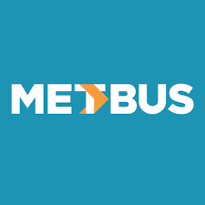

Arquitecto Senior de Datos | Enterprise AI & Data Platform Architect | Cloud & Data Platforms
Resumen Profesional
Arquitecto Senior de Datos especializado en arquitectura empresarial de datos, plataformas modernas de datos y cloud architecture para entornos financieros regulados y organizaciones enterprise.
Diseño y evoluciono plataformas de datos escalables, gobernadas y preparadas para analítica avanzada, productos de datos e inteligencia artificial, conectando estrategia de negocio, gobierno de datos, seguridad, integración y decisiones tecnológicas sostenibles.
Combino visión de arquitectura, ingeniería de datos, software, cloud y liderazgo técnico para habilitar capacidades enterprise de datos, integración y consumo a escala, modernización cloud-native, arquitecturas orientadas a eventos y AI enablement con foco en impacto de largo plazo.
Capacidades Estratégicas
Arquitectura Empresarial de Datos
Plataformas Modernas de Datos
Estrategia de Datos e IA
Arquitectura Cloud (AWS / Azure)
Data Lakes y Arquitecturas Lakehouse
Data Engineering y Pipelines
Habilitación de IA y ML
Gobierno de Datos
Sistemas Distribuidos Escalables
Arquitecturas Orientadas a Eventos
Arquitectura de Microservicios
Productos de Datos
Platform Engineering
Agentic AI
Retrieval-Augmented Generation (RAG)
Policy as Code
AI Governance
Modernización de Plataformas
Liderazgo Técnico
Experiencia Profesional
BI
Banco Itaú Chile
Jornada completa · 2 años
Arquitecto Senior de Datos
2024 – Presente
Lidero iniciativas de arquitectura de datos en un entorno financiero empresarial altamente regulado, alineando estrategia de negocio, gobierno, escalabilidad y modernización tecnológica.
Diseño y evoluciono arquitecturas de datos empresariales orientadas a analítica avanzada, productos de datos, gobierno y preparación para iniciativas de IA.
Defino lineamientos arquitectónicos para integración, almacenamiento, procesamiento y consumo de datos a escala corporativa.
Elaboro estándares de arquitectura para mensajería, integración y arquitecturas orientadas a eventos.
Evalúo patrones modernos como lakehouse, event-driven architectures, cloud-native data platforms y AI-ready data platforms.
Colaboro con stakeholders de negocio, arquitectura, seguridad, gobierno y tecnología para traducir necesidades estratégicas en soluciones sostenibles.
Contribuyo a la evolución de capacidades empresariales de datos, analítica, automatización e inteligencia artificial.
A
Ameris
Jornada completa · 2 años y 8 meses
Arquitecto Cloud
2023 – 2024
Diseñé arquitecturas cloud seguras, escalables y resilientes en AWS y Azure para iniciativas de modernización tecnológica.
Definí patrones cloud-native para integración, automatización, observabilidad y eficiencia operacional.
Colaboré en iniciativas de data lake, servicios distribuidos, pipelines y plataformas cloud orientadas a analítica.
Evalué servicios cloud considerando seguridad, escalabilidad, costo, gobierno y objetivos de negocio.
Ingeniero de Datos y Software
2022 – 2023
Participé en el diseño e implementación de un data lake corporativo.
Desarrollé pipelines de datos y componentes backend para procesamiento, integración y consumo analítico.
Implementé soluciones basadas en microservicios, APIs e integración de datos.
Contribuí a la modernización de plataformas de datos y aplicaciones empresariales.
M

Metbus S.A.
Jornada completa · 6 años 6 meses
Ingeniero de Software
2018 – 2022 | Metbus S.A., Santiago
Asumí funciones de ingeniería de software y datos para iniciativas de modernización operacional, analítica y mejora de experiencia de usuario.
Diseñé, desarrollé e implementé SGI-Storage, servicio de almacenamiento de archivos basado en la nube.
Diseñé, desarrollé e implementé SGI Mantenimiento Web, una aplicación web orientada a gestionar el mantenimiento de buses.
Diseñé, desarrollé e implementé SGI-PredictiveService, servicio predictivo para pronósticos de distancias de buses.
Realicé desarrollo back-end y front-end para aplicaciones como SGI-Planning, SGI-RRHH y SGI-GO.
Asumí responsabilidades de Scrum Master en el proyecto SGI-GO! UI/UX, usando prácticas ágiles SCRUM y Kanban.
Participé en iniciativas de UI/UX orientadas a mejorar la satisfacción del usuario mediante Design Sprint y rediseño de interacción con el producto.
Coordinador de Planificación
2017 – 2017 | Metbus S.A., Santiago
Realicé funciones de análisis, coordinación y programación de conductores para 4 terminales de la empresa, responsable de los servicios 506, 506e, 509, 506v, 546e, 510, 516, 528, 531, 532, 534c, 537, 543, 526, 531, 532 y 537.
Ingeniero de Planificación Trainee
2016 – 2016 | Metbus S.A., Santiago
Realicé funciones de programación de conductores para el Terminal Las Palmas, responsable de los servicios 504, 507, 508, 514 y 541.
TE
Transportes El Túnel Ltda.
Part time · 7 años
Encargado de Planificación y Operaciones
2013 – 2015 | Transportes El Túnel Ltda., Santiago
Realicé funciones de planificación y programación de conductores, gestión de operaciones y gestión de inventario. Implementé un sistema de geolocalización. También realicé el modelamiento, rediseño y mejora de los procesos relacionados a las funciones.
Administrador de Sistemas
2011 – 2012 | Transportes El Túnel Ltda., Santiago
Realicé funciones de administración de bases de datos y redes. También elaboré reportes y scripts para la obtención de datos y creación de métricas.
Asistente Administrativo
2009 – 2010 | Transportes El Túnel Ltda., Santiago
Realicé labores de soporte para la administración y operación.
Docencia Universitaria y Transferencia de Conocimiento
UFT
Universidad Finis Terrae
Tiempo parcial (vespertino) · 2 años
Docente
2024 – Presente | Santiago, Chile
Profesor universitario en asignaturas vinculadas a Data Science, Marketing Technology, analítica aplicada e IA para negocios en la Facultad de Economía y Negocios.
Diseño e imparto asignaturas vinculadas a Data Science, Marketing Technology, analítica aplicada e IA para negocios.
Desarrollo clases prácticas con Python, Jupyter Notebook, visualización, machine learning y storytelling analítico.
Evalúo proyectos aplicados y mentoreo estudiantes en el uso de datos para toma de decisiones.
Fortalezco habilidades de comunicación estratégica, liderazgo técnico y transferencia de conocimiento.
Educación
Magíster en Data Science
Universidad Adolfo Ibáñez | 2022 – 2024
Ingeniería Civil Industrial
Universidad Nacional Andrés Bello | 2014 – 2017
Certificaciones, cursos y aprendizaje continuo
Azure AI Engineer Associate (AI-102)
Microsoft Azure | 2025
Introducción a Machine Learning con Python y Aplicaciones Financieras
Universidad de Chile | 2022
10264A: Developing Web Applications with Microsoft Visual Studio 2010
New Horizons / Sonda Training | 2012 – 2013
6232B: Implementing a Microsoft SQL Server 2008 R2 Database
New Horizons / Sonda Training | 2012 – 2013
10267A: Introduction to Web Development with Microsoft Visual Studio 2010
New Horizons / Sonda Training | 2012 – 2013
10266A: Programming in C# with Microsoft Visual Studio 2010
New Horizons / Sonda Training | 2012 – 2013
2778A: Writing Queries Using Microsoft SQL Server 2008 Transact-SQL
New Horizons / Sonda Training | 2012 – 2013
AWS Certified Solutions Architect – Associate
Preparación en curso
Proyectos / Contribuciones Estratégicas
Capstone Project — AI-driven Fraud & AML Anomaly Detection Platform: lideré el desarrollo de una solución analítica para detectar transacciones potencialmente fraudulentas en una AGF chilena, utilizando Machine Learning no supervisado, feature engineering, clustering y validación con expertos de compliance sobre datos financieros anonimizados.
Elaboré el estándar de uso de Amazon SQS y Amazon EventBridge en Banco Itaú Chile, definiendo lineamientos para mensajería, integración asíncrona y arquitecturas orientadas a eventos.
Desarrollé una iniciativa de Policy as Code para interpretar estándares de arquitectura de datos y codificarlos como reglas automatizadas en pipelines de despliegue, habilitando validaciones para permitir o rechazar despliegues según cumplimiento arquitectónico.
Participé en el desarrollo de sistemas empresariales para Metbus orientados a planificación de operaciones, programación de conductores, mantenimiento de buses y recursos humanos, incluyendo un servicio predictivo para pronosticar distancia recorrida y apoyar la planificación de mantenimiento preventivo.
Habilité patrones de arquitectura empresarial de datos en entornos financieros regulados para soportar analítica escalable y preparación para IA.
Contribuí a la evolución de data lakes y plataformas cloud en iniciativas de modernización con múltiples equipos.
Apoyé la modernización de plataformas operacionales mediante cloud, integración de datos y diseño de servicios distribuidos.